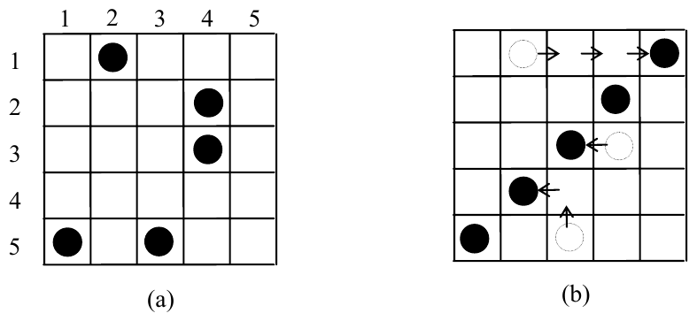

ICPC World Finals 2005 · Problem H
Hua and Shen have invented a simple solitaire board game that they call “The Great Wall Game.” The game is played with n stones on an n × n grid. The stones are placed at random in the squares of the grid, at most one stone per square. In a single move, any single stone can move into an unoccupied location one unit horizontally or vertically in the grid. The goal of the puzzle is to create a “wall,” i.e., to line up all n stones in a straight line either horizontally, vertically, or diagonally using the fewest number of moves. An example for the case n = 5 is shown in Figure 1(a). In Figure 1(b) it is shown that with six moves we can line all the stones up diagonally. No smaller number of moves suffices to create a line of five stones. (However, there are other solutions using six moves, e.g., we can line up all five stones in the third column using six moves.)

There is just one problem – Hua and Shen have no idea what the minimum number of moves is for any given starting board. They would like you to write a program that can take any starting configuration and determine the fewest number of moves needed to create a wall.
The input consists of multiple cases. Each case begins with a line containing an integer n, 1 ≤ n ≤ 15. The next line contains the row and column numbers of the first stone, followed by the row and column numbers of the second stone, and so on. Rows and columns are numbered as in the above diagram. The input data for the last case will be followed by a line containing a single zero.
For each input case, display the case number (1, 2, …) followed by the minimum number of moves needed to line up the n stones into a straight-line wall. Follow the format shown in the sample output.
5 1 2 2 4 3 4 5 1 5 3 2 1 1 1 2 3 3 1 1 2 2 2 0
Board 1: 6 moves required. Board 2: 0 moves required. Board 3: 1 moves required.